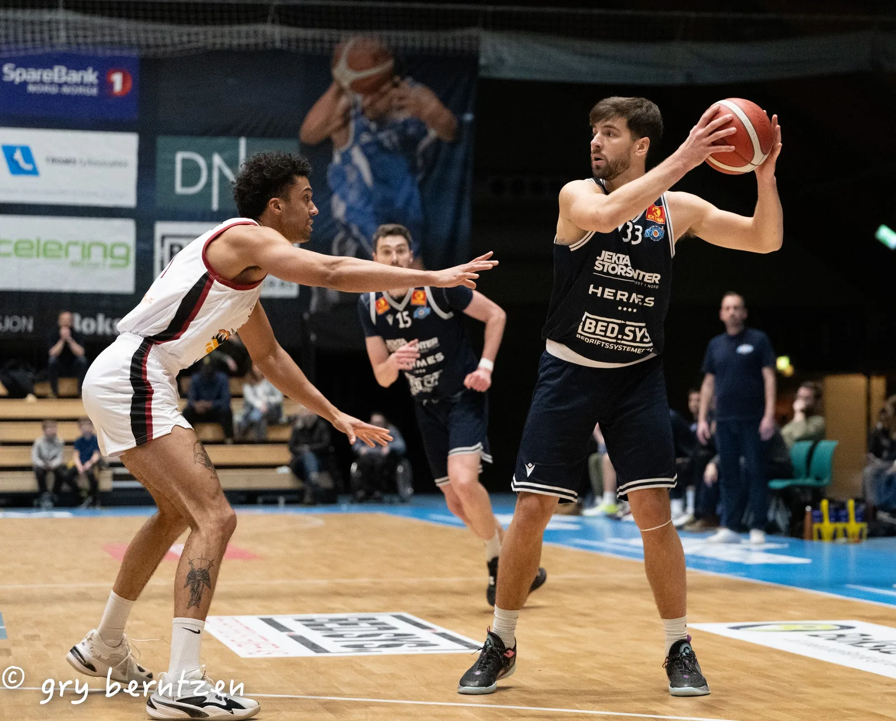
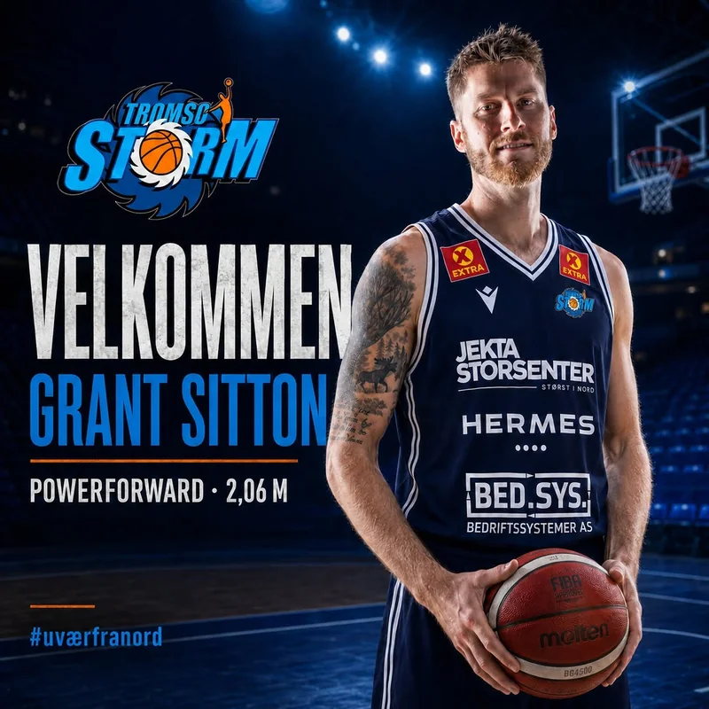
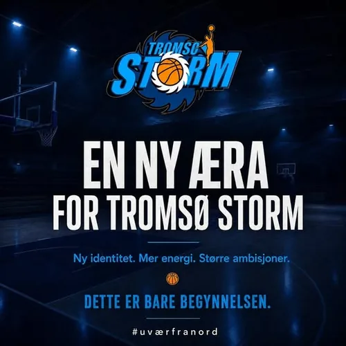
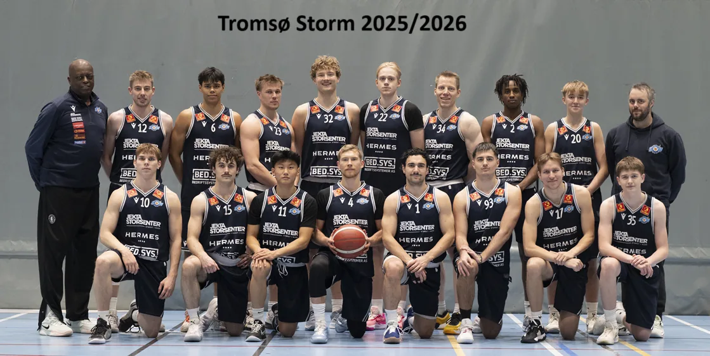
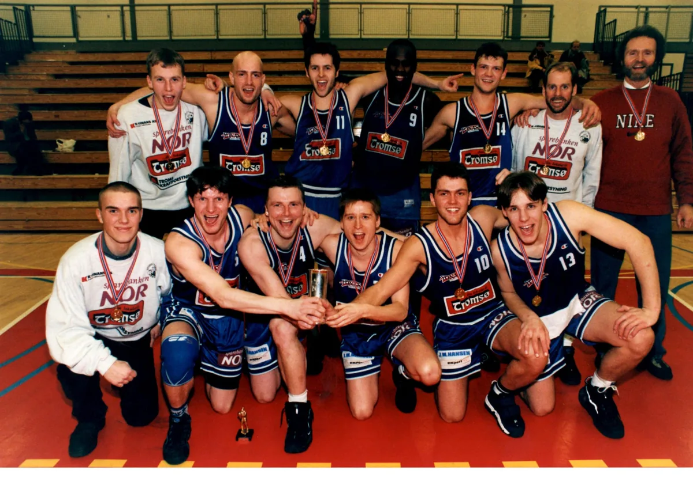
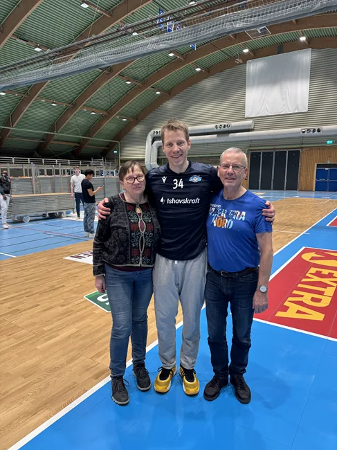
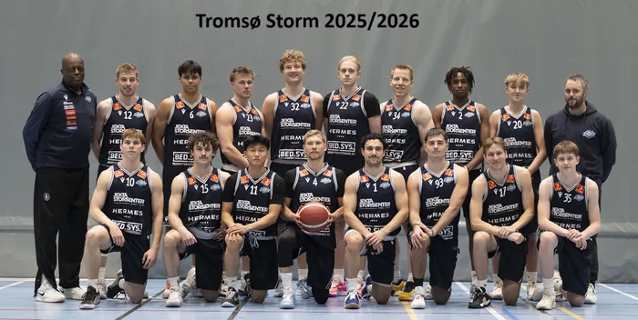

FRE18. SEPTEMBER
Tromsø Storm
Hjemme—Rødtindhallen
FFrøya

Mer energi. Større ambisjoner. Tromsø Storm er tilbake på øverste nivå.
Nye spillere. Ny sesong. Samme kompromissløse kraft fra nord.
Fra Tromsø Basketballklubb til Tromsø Storm – historien fortsetter.

Grant Sitton tilfører 2,06 meter, internasjonal erfaring og et trepoengsskudd som åpner banen.
Les eksisterende artikkel →
Årets trener i BLNO 2022/23 leder et nytt og ambisiøst prosjekt.
Les eksisterende artikkel →Robert Holm og Jeff Lange ledet klubben til det første NM-gullet.
Se klubbhistorien →Spillerkort legges til fortløpende når signeringer og draktnumre offentliggjøres.

Tabellen hentes automatisk fra Norges Basketballforbunds offentlige resultattjeneste.
| Lag | K | V | T | P |
|---|---|---|---|---|
| Laster tabellen … | ||||
Den gamle nettsiden dokumenterer spillere, ildsjeler, sluttspill, skuffelser og store øyeblikk helt tilbake til 2001.

Åge Kvilstad, Ørjan Sandvik Hansen, Tom Wilsgaard, Kelvin Joe Woods og lagkameratene tok klubbens historiske NM-gull under Robert Holm og Jeff Lange.
Les jubileumssaken →
Historien om Anders Solem og en familie som har vært tett vevd inn i klubben gjennom flere generasjoner.
Les portrettet →Fra spiller og daglig leder til mottaker av NBBFs høyeste hederstegn.
Les historien →Tom Wilsgaard og Jeff Lange ble hedret for innsatsen på banen og betydningen for basketbyen Tromsø.
Les historien →De eldste nettartiklene gir et tidsbilde av klubben like etter navneskiftet til Tromsø Storm.
Tilbake til 2001 →Gamle klubbaviser er bevart som PDF og kan få en fast, søkbar plass i den nye løsningen.
Historikken fra dagens WordPress-side skal bevares, struktureres og løftes frem – ikke gjemmes i et arkiv.
Tromsø Basketballklubb blir starten på organisert toppbasket i byen.
Robert Holm leder dame- og herrelaget til henholdsvis sølv og bronse.
Klubben vinner sitt første NM-gull med Robert Holm og Jeff Lange.
Et nytt kapittel begynner med Sergio tilbake og større ambisjoner.
Mer enn 2 100 artikler kan bli søkbare etter sesong, spiller, trener og motstander.
Eksisterende arkiv →Øvre Storvollen 77, 9104 Kvaløya. Hallen har garderober, kiosk-/kjøkkenmuligheter og parkering ved anlegget. Kom tidlig på kampdag.
Åpne kartTreninger, lag og informasjon for unge spillere og foreldre får en tydelig inngang på den nye siden.
Se ungdomsnytt →
Kampgalleri →Barn under 16 år kommer gratis inn.